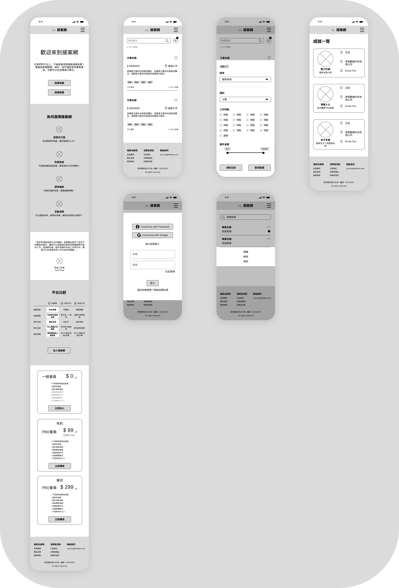

Overview
The problem
The platform has functional capabilities and an information structure, but it lacks
optimization for user experience and visual design.
The goals
- Develop a responsive website that maintains interface consistency, content and function
continuity, and well-balanced layouts across different screen sizes.
- Design a simple and clean interface in both dark and light modes, incorporating the
primary colors and logo provided by the client.
- Produce design documents to ensure visual consistency throughout the project.
Research
In addition to leveraging our own experience using multiple freelance platforms, we conducted
research on various platforms in the market to analyze the strengths and weaknesses of their
interface and user flow. Our goal was to make our platform more exceptional.
Ideation
Prioritizing mobile screen sizes, we conducted quick sketches to explore various layout
possibilities. After careful consideration, we combined the strengths of different
layouts
and proceeded to the digital wireframing stage.

Starting the design
Digital Wireframe
In the digital wireframe, we made adjustments to the layout and information cards to
enhance
readability. We utilized whitespace and font hierarchy to highlight important
information.
Additionally, we designed a guided tutorial for the project creation process, making it
easier for users to get started with step-by-step instructions and text explanations.

Low-Fidelity Prototype
During the low-fidelity prototype testing, we identified some usability issues.

Findings
- Certain editing menus could benefit from the inclusion of icons representing the purpose
of each option.
- To accommodate future avatar functionality, we suggested adding an avatar setting
feature.
- User profiles could include a history of their project engagements to enhance
credibility.
Refining the design
Mockups
Using Material Design, we created components and color schemes to enhance the visual.
In response to feedback from previous meetings, we made adjustments to improve the user
experience:
-
In the message settings menu, we added icons to represent the purpose of each
option.

-
Within user settings, we introduced an avatar setting feature and replaced
usernames
with avatars in achievement cards.

-
On the user profile, we added a display of project engagement history.
Considering
experienced freelancers may have multiple entries, we opted for showing the
total
number
of projects, and show 5 of them in each pagination. We also included a display
settings
section for project engagement records in user setting.

Different Screen sizes

High-fidelity prototype
After testing the high-fidelity prototype, we identified further areas for improvement.

Findings
- It was difficult to determine which conversation window was currently displayed.
- The purposal button for projects lacked sufficient emphasis.
- The presentation style of project listings did not encourage users to click.
Consideration was given to changing to a card-based layout.
Refine Hi-Fi Prototype
Based on the above findings, we made further updates and arrived at the final version of the
prototype.
Dark and Light Mode
We designed the website to be responsive, accommodating both dark and light modes.

Design Documents
For this project, we based the design on the Material Design framework and incorporated
the
client's specified colors. Finally, I compiled the design components, fonts, colors, and
layouts used during the design process into design documents, which were submitted to
the
client along with other relevant materials.

Accessibility considerations
During the website development process, we consistently considered accessibility.
- We added icons in front of buttons to provide visual representation.
- We ensured sufficient color contrast for text areas to enhance visibility.
- We followed hierarchy principles in organizing the content of the text.
Takeaways
Impact
With the conclusion of the project, the UI/UX design phase has come to an end. The subsequent
development will be carried out by the client.
What I learned
- Through the use of the Material Design system in this project, I gained a deeper
understanding of its principles. In future web design projects, I aim to apply this
system more effectively and efficiently, ensuring visual consistency and readability.
- I developed a habit of preserving versions at each stage of the design process. While
using components to handle recurring elements facilitated efficiency, it posed
challenges when working with components that span multiple pages. With increased
proficiency in Figma, I have gained new insights on preserving versions. I aim to
document these insights as a standard operating procedure (SOP) for future projects.
- Different devices and platforms (Android, iOS, mobile, desktop) present variations in
how websites are displayed, such as the location of the URL bar or the shrinking of the
toolbar. Therefore, in addition to mastering different screen sizes, it is crucial to
consider the screen space available after accounting for these elements.
- During the design process, even for features yet to be developed, I proactively included
them in the design if I believed they would be beneficial for the platform, leaving room
for their implementation. This approach eliminates the need for redesigning the
interface when such features are developed.